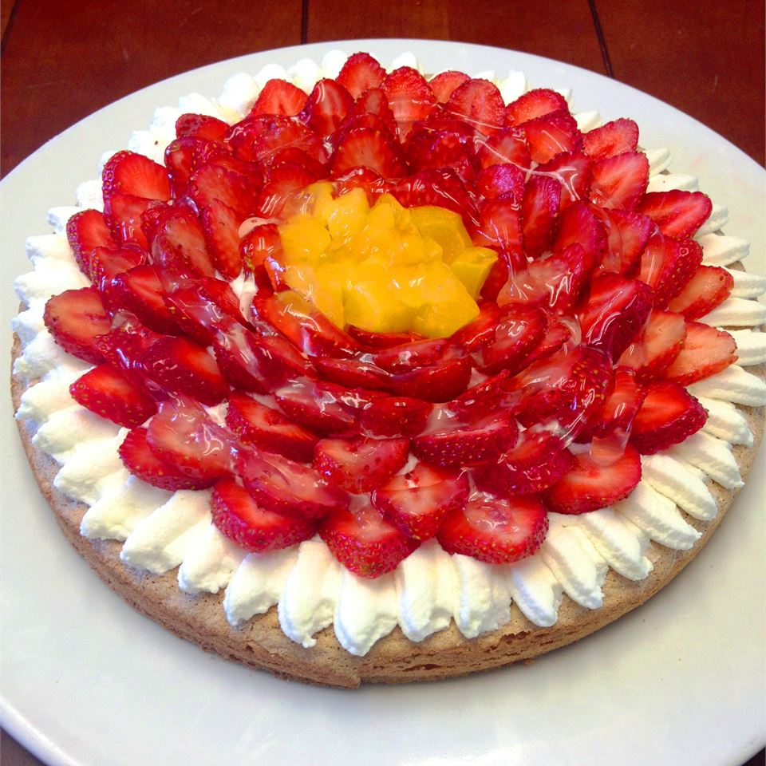

Strawberry Dessert

An unusual but tasty blend of meringue, strawberries, coconut, pecans and saltine crackers.
- 3 egg whites
- 1 cup white sugar
- 3/4 teaspoon cream of tartar
- 1/2 cup saltine crackers, crushed
- 1/2 cup flaked coconut
- 1/2 cup chopped pecans
- 2 cups whipping cream
- 1/2 teaspoon unflavored gelatin
- 1/2 cup white sugar
- 4 cups sliced fresh strawberries
- Step 1
Preheat oven to 375 degrees F (190 degrees C).
- Step 2
In a large bowl, beat egg whites until soft peaks form. Gradually add 1 cup sugar and cream of tartar, continuing to beat until whites form stiff peaks. Gently fold in cracker crumbs, coconut and pecans. Spread mixture onto the bottom and up the sides of a 9 inch pie pan.
- Step 3
Bake in preheated oven for 20 to 22 minutes, or until lightly browned. Cool completely.
- Step 4
In a large bowl, beat cream, gelatin and remaining sugar until stiff peaks form. Fold in strawberries, then pour over egg white layer. Cover and refrigerate for 2 hours.